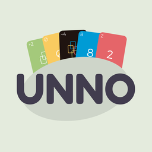

Privacy · Privacidade
Privacy Policy
Last updated: September 25, 2026
This policy explains how Unno: Card Game ("the app"), by HomeTech, handles information. The app has no sign-up, no login and no servers of its own.
1. What stays on your device
Settings (sound, number of players, avatar), the player name you type and whether you bought "Remove ads" are stored only on your device. We do not collect or receive this data.
2. Local multiplayer
In multiplayer, the app exchanges with the other devices at the table, over your local Wi-Fi network or Bluetooth, only what the match needs: player name and avatar and match data (cards and moves). None of it goes over the internet or is stored by us. Local Network and Bluetooth permissions are used only for this.
3. Ads (Google AdMob)
The free version shows ads from Google AdMob. To serve and measure ads, Google may collect data such as device identifiers (including the advertising identifier, only if you allow it in the iPhone tracking prompt), IP address, device model, OS, language and ad interactions. If you do not allow tracking, ads are not personalized.
Where required by law (e.g. GDPR, LGPD), the app shows Google's consent form before loading ads. Learn how Google uses data: policies.google.com/technologies/partner-sites.
4. In-app purchases
The "Remove ads" purchase is processed by the App Store (Apple) or Google Play. We never receive your payment details.
5. Children
The app is not directed to children under 13 and does not knowingly collect their personal data.
6. Your choices
At any time you can: deny or revoke tracking (Settings › Privacy & Security › Tracking); reset your advertising identifier; delete all local data by uninstalling the app. For questions or requests about your data, contact us.
7. Changes and contact
We may update this policy; the date above shows the current version. Contact: momentum323@gmail.com.
Política de Privacidade
Última atualização: 25 de setembro de 2026
Esta política explica como o jogo Unno: Card Game ("o app"), da HomeTech, trata informações. O app não tem cadastro, login nem servidores próprios.
1. O que fica só no seu aparelho
Configurações (som, número de jogadores, avatar), o nome de jogador que você digita e a informação de que você comprou "Remover anúncios" ficam guardados apenas no seu aparelho. Não coletamos nem enviamos esses dados para nós.
2. Multijogador local
Na partida multijogador, o app troca com os outros aparelhos da mesa, pela sua rede Wi-Fi local ou por Bluetooth, apenas o necessário para o jogo: nome e avatar de jogador e dados da partida (cartas e jogadas). Nada disso passa pela internet nem é armazenado por nós. As permissões de Rede Local e Bluetooth servem só para isso.
3. Anúncios (Google AdMob)
A versão gratuita mostra anúncios do Google AdMob. Para exibir e medir anúncios, o Google pode coletar dados como identificadores do aparelho (incluindo o identificador de publicidade, somente se você permitir no pedido de rastreamento do iPhone), endereço IP, modelo do aparelho, sistema, idioma e interações com os anúncios. Se você não permitir o rastreamento, os anúncios não são personalizados.
Onde a lei exige (por exemplo, LGPD e GDPR), o app mostra um formulário de consentimento do Google antes de carregar anúncios. Saiba como o Google usa dados: policies.google.com/technologies/partner-sites.
4. Compras no app
A compra "Remover anúncios" é processada pela App Store (Apple) ou pelo Google Play. Não recebemos seus dados de pagamento.
5. Crianças
O app não é direcionado a crianças menores de 13 anos e não coleta intencionalmente dados pessoais delas.
6. Seus direitos
Você pode, a qualquer momento: negar ou revogar o rastreamento (Ajustes › Privacidade e Segurança › Rastreamento); redefinir o identificador de publicidade; apagar todos os dados locais desinstalando o app. Para dúvidas ou pedidos sobre seus dados, fale conosco.
7. Alterações e contato
Podemos atualizar esta política; a data acima indica a versão atual. Contato: momentum323@gmail.com.